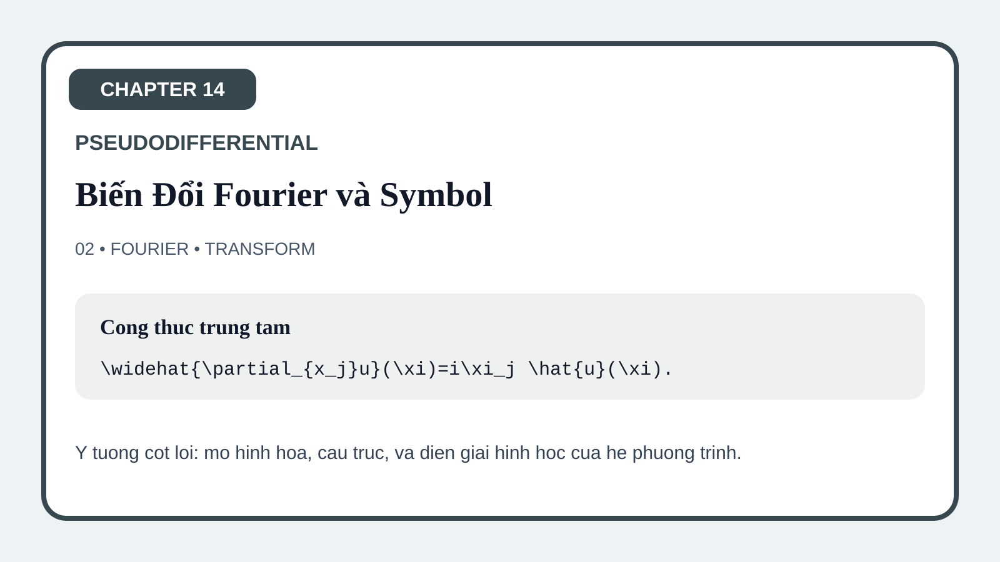
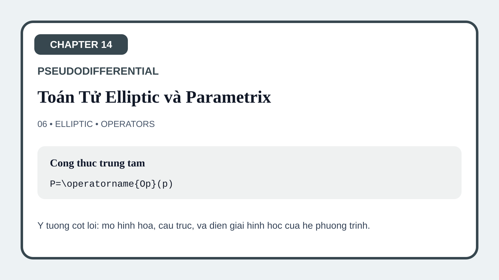

14-01 Motivation: Beyond Differential Operators
The opening figure makes the conceptual leap visible: differential operators are too rigid for many modern PDE problems, while symbol-based analysis captures frequency behavior more flexibly.
This page gathers the visual assets for Chapter 14 on pseudo-differential operators. The gallery is organized to make the chapter's conceptual transition visible: from Fourier multipliers and symbol intuition to operator definition, symbolic calculus, parametrices, manifold extensions, and modern elliptic regularity. Lesson 14.00 remains the conceptual prerequisite, while the figures here track the main illustrated sequence from 14.01 onward.
The opening figure makes the conceptual leap visible: differential operators are too rigid for many modern PDE problems, while symbol-based analysis captures frequency behavior more flexibly.
This figure shows the Fourier side of operators, making symbols feel like the natural data that encode action on oscillations rather than a purely formal invention.

The symbol-class figure organizes growth and derivative control across position and frequency, clarifying why pseudo-differential calculus needs structured function classes rather than arbitrary symbols.
This figure turns the operator definition into a map from symbol to action, helping students see oscillatory integrals as constructive rather than opaque.
The calculus figure illustrates how symbolic asymptotics support operator algebra, making composition and adjoints feel like controlled transformations of symbols.
This figure captures the heart of the chapter: ellipticity leads to approximate inversion, and that parametrix viewpoint drives solvability and regularity.

The manifold figure shows how local symbolic constructions are patched globally, helping students see that the calculus is geometric rather than merely Euclidean.
The closing figure returns to elliptic regularity through the pseudo-differential lens, showing how symbolic inversion reframes earlier PDE theory in a more modern calculus.